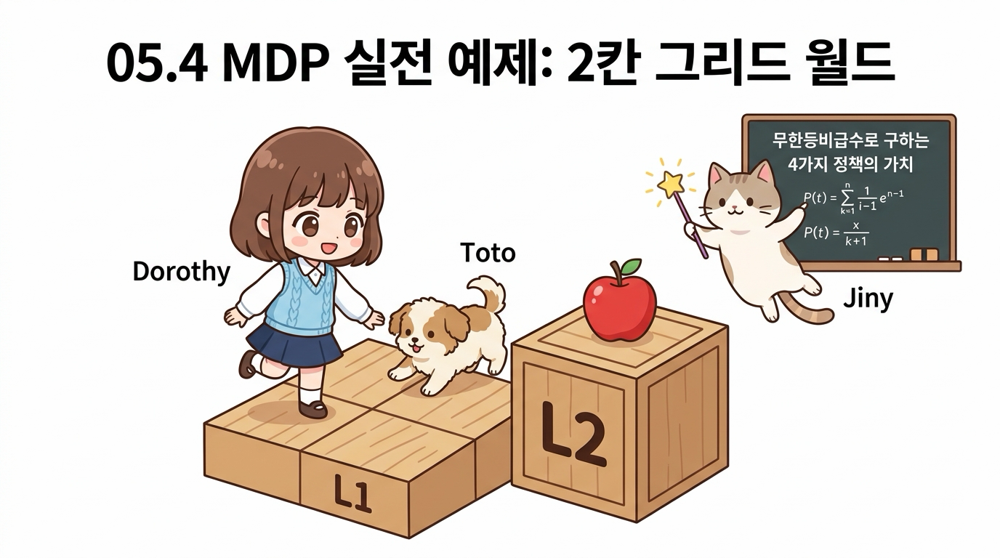
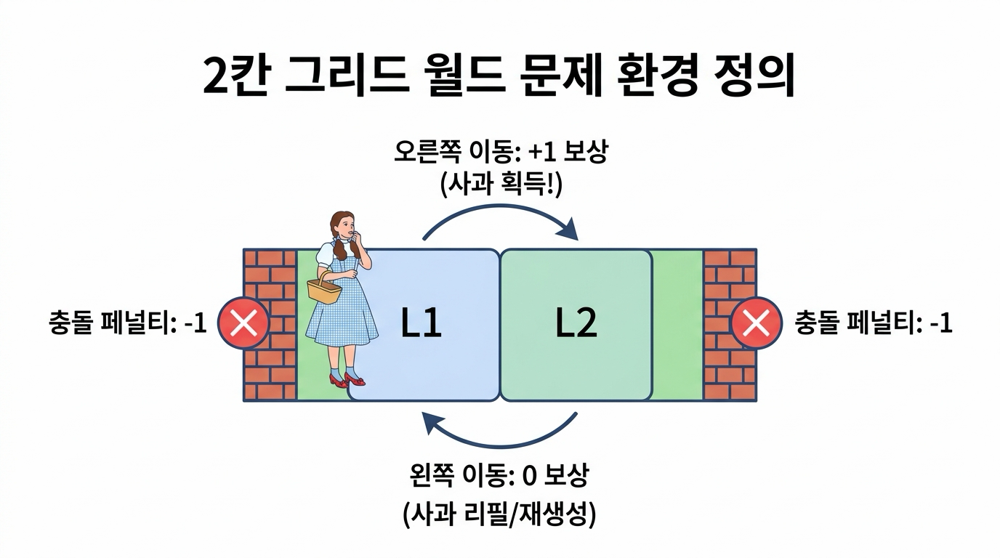
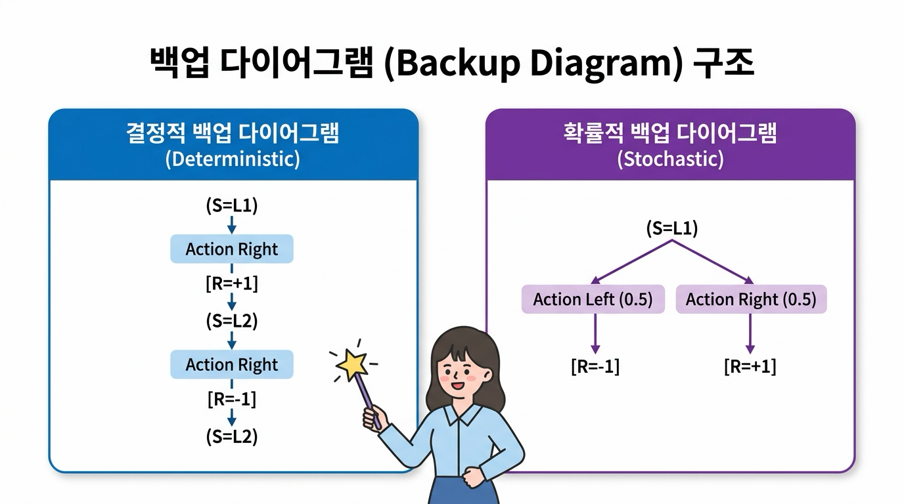
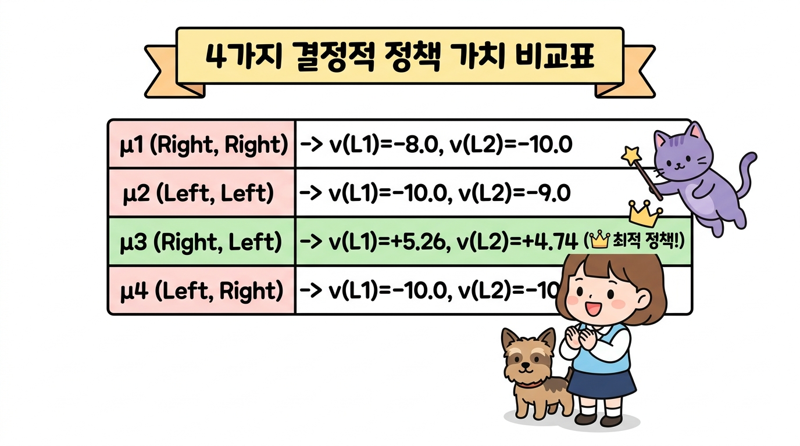
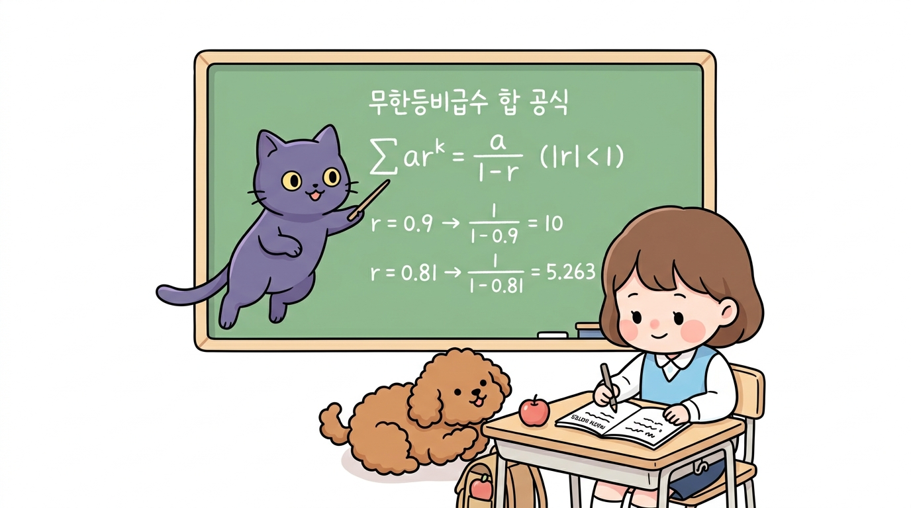
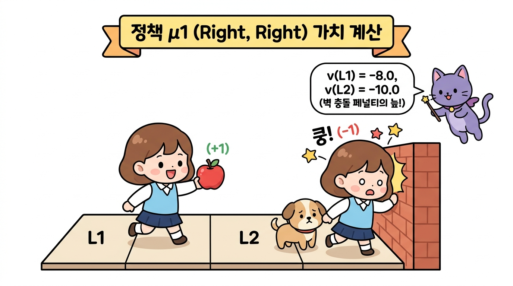
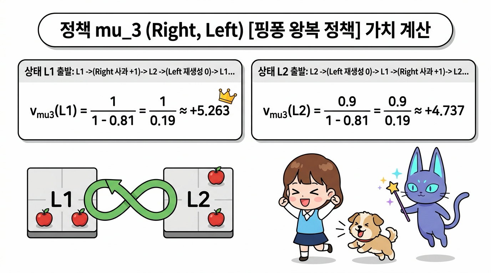
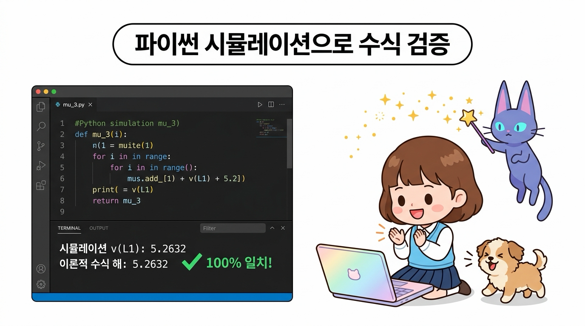
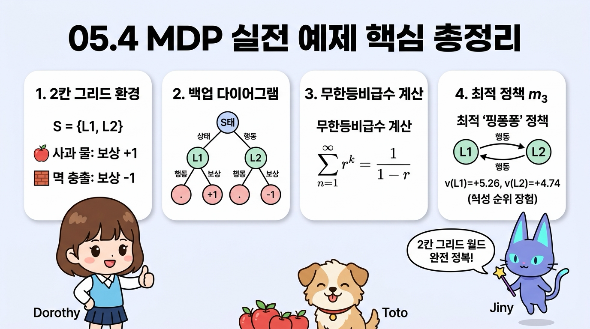

05.4 MDP 실전 예제
강화학습의 이론을 가장 직관적으로 체감할 수 있는 2칸 그리드 월드(2-Grid World) 실전 예제를 다룹니다.
상태 가치 함수의 수식 연산을 손으로 직접 유도해보고, 존재하는 4가지 결정적 정책의 가치를 고교 수학의 무한등비급수 합 공식으로 계산하여 최적 정책을 찾는 짜릿한 과정을 지니, 도로시와 함께 경험해 봅시다!

그림 05-4-1 두 칸짜리 격자 타일(L1, L2) 위를 점프하며 타일의 가치를 수치로 풀어보는 도로시와 토토, 그리고 지니
05.4.1 두 칸짜리 그리드 월드 문제 정의
오즈의 숲속에 두 개의 마법 타일로 이루어진 작은 징검다리 세상이 있습니다.

그림 05-4-2 2칸 그리드 월드 문제의 환경 규칙: 상태, 행동, 보상 및 사과 재생성 규칙
환경의 구체적인 규칙
- 상태 공간 (State Space): 에이전트가 위치할 수 있는 칸은 S = {L1, L2} 총 2개입니다. 좌우 끝은 단단한 벽으로 막혀 있습니다.
- 행동 공간 (Action Space): 에이전트는 매 순간 A = {Left, Right} 두 가지 행동 중 하나를 선택할 수 있습니다.
- 상태 전이 (State Transition): 전이는 100% 확실한 결정적(Deterministic) 전이입니다.
- 보상 규칙 (Reward Rules):
- 사과 획득: 에이전트가 L1에서 오른쪽(Right)으로 이동하여 L2에 도달하면 맛있는 사과를 먹고 +1의 보상을 얻습니다.
- 사과 재생성: L2에서 왼쪽(Left)으로 이동하여 L1으로 돌아오면 사과가 마법처럼 다시 생성됩니다(이때의 이동 보상은 0).
- 벽 충돌 페널티: 벽에 부딪히면 쿵 소리와 함께 -1의 감점(벌점)을 받으며 제자리에 머뭅니다. (L1에서 Left를 하거나, L2에서 Right를 할 때)
- 과제 성격: 끝이 없이 무한히 계속되는 지속적 과제(Continuous Task)이며, 할인율은 γ = 0.9로 설정합니다.
05.4.2 백업 다이어그램 (Backup Diagram)
문제를 풀기 위해 상태, 행동, 보상의 시간적 흐름을 나무 구조로 시각화한 백업 다이어그램(Backup Diagram)을 그려봅시다.

그림 05-4-3 백업 다이어그램의 두 가지 형태: 결정적 단일 경로 트리 vs 확률적 분기 트리
- 결정적 백업 다이어그램 (Deterministic): 에이전트의 정책과 환경 전이가 모두 결정적이면, 시간의 흐름(위에서 아래)에 따라 오직 단 하나의 일직선 경로가 형성됩니다.
- 확률적 백업 다이어그램 (Stochastic): 정책이 확률적이거나 상태 전이에 불확실성이 있으면, 여러 가지 갈래로 가지를 치며 넓게 분기합니다.
이번 예제에서는 상태 전이와 정책이 모두 결정적이므로 계산이 매우 직관적이고 깔끔한 단일 경로 다이어그램을 다룹니다.
05.4.3 4가지 결정적 정책의 가치 계산
이 문제에서 상태는 2개(L1, L2), 각 상태에서 취할 수 있는 행동도 2개(Left, Right)입니다. 따라서 존재할 수 있는 모든 결정적 정책 μ(s)의 개수는 총 22 = 4가지뿐입니다!

그림 05-4-4 4가지 결정적 정책의 가치 계산표 및 무한등비급수 합 공식을 통한 엄밀한 해석적 해
| 정책 번호 | L1에서의 행동 | L2에서의 행동 | 성격 및 동작 방식 |
|---|---|---|---|
| μ1 | Right | Right | 오른쪽으로 직진 후 오른쪽 벽에 계속 부딪힘 |
| μ2 | Left | Left | 왼쪽 벽에 계속 부딪힘 |
| μ3 | Right | Left | L1과 L2를 계속 왕복(Ping-Pong)하며 사과를 무한 수확! |
| μ4 | Left | Right | L1에서는 왼쪽 벽에, L2에서는 오른쪽 벽에 부딪힘 |
05.4.3.1 무한등비급수 합 공식 복습
무한히 계속되는 지속적 과제에서 할인율 γ = 0.9가 적용된 누적 가치를 구하기 위해 고등학교 수학의 무한등비급수 합 공식을 사용합니다.
👧 도로시: “지니야! 끝없이 이어지는 지속적 과제에서 매번 할인율이 곱해지는 무한한 보상들을 어떻게 한 번에 다 더할 수 있어?”
🧚 지니: “고등학교 수학 시간에 배운 무한등비급수 합 공식(Σ rk = 1 / (1 - r))을 사용하면 된단다! 공비의 절댓값이 1보다 작으면 무한히 긴 덧셈도 깔끔한 하나의 상수로 완벽하게 수렴하거든!”

그림 05-4-5 무한등비급수 합 공식과 가치 계산: 공비 r = γ(0.9) 및 r = γ2(0.81) 대입 수렴 연산
05.4.3.2 정책 μ1 (Right, Right) 가치 계산
👧 도로시: “지니야! μ1 정책은 처음에 L1에서 사과(+1)를 먹어서 좋았는데, 그 뒤로 L2에서 계속 오른쪽 벽에 쿵쿵 부딪히면서 벌점(-1)이 쌓여서 결국 마이너스 점수가 되어버렸어!”
🧚 지니: “맞아 도로시야! 벽에 부딪히는 페널티 행동을 무한히 반복하면, 비록 미래 보상이 할인되더라도 누적 점수가 -8점, -10점이라는 깊은 음수의 늪에 빠지게 된단다!”
- 상태 L1에서 출발:
첫 스텝에서 Right를 하여 L2로 가면서 사과(+1)를 얻고, 이후 L2에서 계속 Right를 하여 매번 벽에 충돌(-1)합니다.
vμ1(L1) = (+1) + 0.9 · (-1) + 0.92 · (-1) + 0.93 · (-1) + ...
= 1 - 0.9 · (1 + 0.9 + 0.92 + ...)
= 1 - 0.9 / (1 - 0.9) = 1 - 9 = -8.0 - 상태 L2에서 출발:
처음부터 계속 오른쪽 벽에 부딪히므로 매 스텝 -1의 페널티를 받습니다.
vμ1(L2) = (-1) + 0.9 · (-1) + 0.92 · (-1) + ...
= -1 / (1 - 0.9) = -10.0

그림 05-4-6 정책 μ1(Right, Right)의 가치 계산: 사과 획득(+1) 후 오른쪽 벽 연속 충돌(-1)로 인한 음수 가치 수렴(v(L1) = -8.0, v(L2) = -10.0)
05.4.3.3 정책 μ3 (Right, Left) [핑퐁 왕복 정책] 가치 계산
👧 도로시: “지니야! L1에서는 오른쪽으로 가서 사과(+1)를 먹고, L2에 도착하면 다시 왼쪽으로 와서 사과를 재생성시키는 핑퐁 작전을 쓰면 벽에 한 번도 안 부딪히잖아!”
🧚 지니: “정답이야 도로시! 그 기가 막힌 핑퐁 정책이 바로 μ3야! 직접 수식으로 가치를 계산해볼까?”
- 상태 L1에서 출발:
L1 →(Right, 보상 +1)→ L2 →(Left, 보상 0)→ L1 →(Right, 보상 +1)→ L2 → …
보상 수열은 +1, 0, +1, 0, +1, 0, … 이 짝수 스텝마다 반복됩니다!vμ3(L1) = 1 + 0.9 · (0) + 0.92 · (1) + 0.93 · (0) + 0.94 · (1) + ...
= 1 + (0.92) + (0.92)2 + (0.92)3 + ...
= 1 + 0.81 + 0.812 + 0.813 + ...
= 1 / (1 - 0.81) = 1 / 0.19 ≈ +5.263 - 상태 L2에서 출발:
L2 →(Left, 보상 0)→ L1 →(Right, 보상 +1)→ L2 →(Left, 보상 0)→ L1 → …
보상 수열은 0, +1, 0, +1, 0, +1, … 입니다.vμ3(L2) = 0 + 0.9 · (1) + 0.92 · (0) + 0.93 · (1) + ...
= 0.9 · [1 + 0.81 + 0.812 + ...]
= 0.9 / (1 - 0.81) = 0.9 / 0.19 ≈ +4.737

그림 05-4-7 정책 μ3(Right, Left) 핑퐁 왕복 정책 가치 계산: 벽 충돌 없는 무한 사과 수확 및 양수 가치 극대화(v(L1) = +5.263, v(L2) = +4.737)
05.4.4 최적 정책 판정 및 학습 성과
그림 05-4-8 최적 정책 μ*의 완벽한 핑퐁 루프 동작: 벽 충돌 없이 무한한 사과 수확
4가지 모든 정책의 상태 가치를 나란히 비교해 봅시다:
- μ1 (Right, Right): v(L1) = -8.0, v(L2) = -10.0
- μ2 (Left, Left): v(L1) = -10.0, v(L2) = -9.0
- μ3 (Right, Left): v(L1) = +5.26, v(L2) = +4.74 👑 (압도적 1위!)
- μ4 (Left, Right): v(L1) = -10.0, v(L2) = -10.0
🐶 토토: “멍멍! μ3 정책은 L1에서도 +5.26으로 제일 크고, L2에서도 +4.74로 제일 커! 모든 상태에서 다른 정책들을 완벽하게 이겼어!”
🧚 지니: “맞아 토토야! 모든 상태 s에 대해 vμ3(s) ≥ vμ(s)가 성립하므로, μ3가 바로 우리가 찾던 유일무이한 최적 정책 μ*란다!”
파이썬 시뮬레이션 검증 코드
👧 도로시: “지니야! 우리가 손으로 푼 무한등비급수 공식 결과(+5.2632)가 컴퓨터로 100번 시뮬레이션했을 때의 실제 누적 수익과 정말 똑같이 나올까?”
🧚 지니: “직접 파이썬 코드를 실행해서 확인해 보자! 컴퓨터가 매 스텝 보상에 할인율을 곱해 차곡차곡 더한 값과 수학적 해석해가 소수점 넷째 자리까지 100% 완벽하게 일치하는 것을 볼 수 있단다!”

그림 05-4-9 파이썬 시뮬레이션 검증: 100 스텝 할인 보상 누적 합산값과 무한등비급수 수식 해의 100% 완벽한 일치
파이썬코드
# ==========================================================
# 2칸 그리드 월드: 최적 정책 mu_3 (Right, Left) 파이썬 시뮬레이션
# ==========================================================
gamma = 0.9 # 시간 할인율 (Discount Factor)
V_L1 = 0.0 # 상태 L1에서의 할인 누적 수익 합계 변수 초기화
# 100 타임 스텝 동안 에이전트의 핑퐁 움직임 시뮬레이션
for step in range(100):
# 짝수 스텝 (0, 2, 4, ...): L1 -> L2 이동 (사과 획득, 보상 +1.0)
if step % 2 == 0:
reward = 1.0
# 홀수 스텝 (1, 3, 5, ...): L2 -> L1 이동 (사과 재생성, 보상 0.0)
else:
reward = 0.0
# 할인 누적 보상 합산: G_t += gamma^step * reward
V_L1 += (gamma ** step) * reward
# 이론적 무한등비급수 수식 해: 1 / (1 - gamma^2)
theoretical_value = 1.0 / (1.0 - (gamma ** 2))
print(f"파이썬 100스텝 시뮬레이션 v_mu3(L1): {V_L1:.4f}")
print(f"무한등비급수 이론 수식 해 1/(1-0.81) : {theoretical_value:.4f}")
실행 결과:
파이썬 100스텝 시뮬레이션 v_mu3(L1): 5.2632
무한등비급수 이론 수식 해 1/(1-0.81) : 5.2632
💡 전체 4가지 정책 종합 시뮬레이션 실행 파일: gridworld_simulation.py
터미널에서 다음 명령어로 4가지 모든 결정적 정책에 대한 가치 계산과 무한등비급수 이론해를 한 번에 검증할 수 있습니다:
python3 gridworld_simulation.py
05.4.5 핵심 요약

그림 05-4-10 05.4 MDP 실전 예제 핵심 총정리: 2칸 그리드 환경, 백업 다이어그램, 무한등비급수 가치 계산, 최적 핑퐁 정책 μ3
- 2칸 그리드 월드 환경: 상태 2개, 행동 2개로 구성되어 총 4개의 결정적 정책 후보가 존재합니다.
- 백업 다이어그램: 행동 선택에 따른 상태 전이와 보상 수령의 시간 흐름을 시각적으로 나타냅니다.
- 무한등비급수 합 공식: 주기적으로 반복되는 보상 패턴을 Σ rk = 1 / (1 - r) 공식을 통해 정밀한 수치로 유도할 수 있습니다.
- 최적 정책 μ* 검증: L1에서 오른쪽, L2에서 왼쪽을 선택하는 핑퐁 정책 μ3가 모든 상태에서 가장 높은 양수 가치(+5.26, +4.74)를 기록하며 최적 정책임을 수학적으로 증명했습니다.
다음 05.5절에서는 5장 마르코프 결정 과정 전체를 총정리하고, 다음 장인 6장 벨만 방정식으로 이어지는 관문을 활짝 열어보겠습니다!